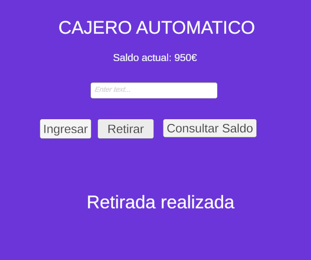

¡Hola! Soy
Cristina Tornero
Desarrolladora de Aplicaciones Multiplataforma
Apasionada por la tecnología y el desarrollo de soluciones creativas. En constante aprendizaje para seguir creciendo como desarrolladora.
Sobre mí
Soy estudiante de Desarrollo de Aplicaciones Multiplataforma con una gran pasión por la tecnología y la creatividad. Me encanta convertir ideas en proyectos reales y seguir aprendiendo constantemente.
Idiomas
Español
Inglés
Competencias
Trabajo en equipo
Comunicación
Habilidades
HTML
CSS
JavaScript
MySQL
C#
Formación
DAM - Florida - Catarroja
Auxiliar veterinaria
Bachillerato Humanístico

Ver proyectos🎯 Objetivos
Busco hacerme hueco en el sector tecnológico como programadora junior, aportando soluciones creativas y aprendiendo continuamente.
🏆 Logros
- Desarrollo de aplicaciones funcionales en Unity
- Implementación de lógica en C#
- Uso de bases de datos MySQL